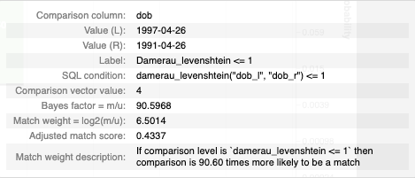

waterfall_chart¶
At a glance
Useful for: Looking at the breakdown of the match weight for a pair of records.
API Documentation: waterfall_chart()
What is needed to generate the chart? A trained Splink model
Worked Example¶
from splink.duckdb.linker import DuckDBLinker
import splink.duckdb.comparison_library as cl
import splink.duckdb.comparison_template_library as ctl
from splink.duckdb.blocking_rule_library import block_on
from splink.datasets import splink_datasets
import logging, sys
logging.disable(sys.maxsize)
df = splink_datasets.fake_1000
settings = {
"link_type": "dedupe_only",
"blocking_rules_to_generate_predictions": [
block_on("first_name"),
block_on("surname"),
],
"comparisons": [
ctl.name_comparison("first_name", term_frequency_adjustments=True),
ctl.name_comparison("surname"),
ctl.date_comparison("dob", cast_strings_to_date=True),
cl.exact_match("city"),
ctl.email_comparison("email", include_username_fuzzy_level=False),
],
"retain_intermediate_calculation_columns": True,
"retain_matching_columns":True,
}
linker = DuckDBLinker(df, settings)
linker.estimate_u_using_random_sampling(max_pairs=1e6)
blocking_rule_for_training = block_on(["first_name", "surname"])
linker.estimate_parameters_using_expectation_maximisation(blocking_rule_for_training)
blocking_rule_for_training = block_on("dob")
linker.estimate_parameters_using_expectation_maximisation(blocking_rule_for_training)
df_predictions = linker.predict(threshold_match_probability=0.2)
records_to_view = df_predictions.as_record_dict(limit=5)
linker.waterfall_chart(records_to_view, filter_nulls=False)
What the chart shows¶
The waterfall_chart shows the amount of evidence of a match that is provided by each comparison for a pair of records. Each bar represents a comparison and the corresponding amount of evidence (i.e. match weight) of a match for the pair of values displayed above the bar.
What the chart tooltip shows

The tooltip contains information based on the bar that the user is hovering over, including:
- The comparison column (or columns)
- The column values from the pair of records being compared
- The comparison level as a label, SQL statement and the corresponding comparison vector value
- The bayes factor (i.e. how many times more likely is a match based on this evidence)
- The match weight for the comparison level
- The cumulative match probability from the chosen comparison and all of the previous comparisons.
How to interpret the chart¶
The first bar (labelled "Prior") is the match weight if no additional knowledge of features is taken into account, and can be thought of as similar to the y-intercept in a simple regression.
Each subsequent bar shows the match weight for a comparison. These bars can be positive or negative depending on whether the given comparison gives positive or negative evidence for the two records being a match.
Additional bars are added for comparisons with term frequency adjustments. For example, the chart above has term frequency adjustments for first_name so there is an extra tf_first_name bar showing how the frequency of a given name impacts the amount of evidence for the two records being a match.
The final bar represents total match weight for the pair of records. This match weight can also be translated into a final match probablility, and the corresponding match probability is shown on the right axis (note the logarithmic scale).
Actions to take as a result of the chart¶
This chart is useful for spot checking pairs of records to see if the Splink model is behaving as expected.
If a pair of records look like they are incorrectly being assigned as a match/non-match, it is a sign that the Splink model is not working optimally. If this is the case, it is worth revisiting the model training step.
Some common scenarios include:
-
If a comparison isn't capturing a specific edge case (e.g. fuzzy match), add a comparison level to capture this case and retrain the model.
-
If the match weight for a comparison is looking unusual, refer to the
match_weights_chartto see the match weight in context with the rest of the comparison levels within that comparison. If it is still looking unusual, you can dig deeper with theparameter_estimate_comparisons_chartto see if the model training runs are consistent. If there is a lot of variation between model training sessions, this can suggest some instability in the model. In this case, try some different model training rules and/or comparison levels. -
If the "Prior" match weight is too small or large compared to the match weight provided by the comparisons, try some different determininstic rules and recall inputs to the
estimate_probability_two_records_matchfunction. -
If you are working with a model with term frequency adjustments and want to dig deeper into the impact of term frequency on the model as a whole (i.e. not just for a single pairwise comparison), check out the
tf_adjustment_chart.